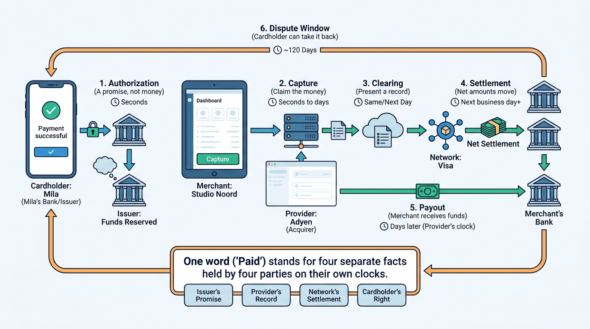

Part I — MONEY: How a Payment Actually Moves
Follow the Money: What Happens Between “Pay” and “Paid”
AI-assisted: researched and written with Claude Code; illustrations generated with Gemini. How this works

Image generated by Google Gemini (gemini-3-pro-image-preview)